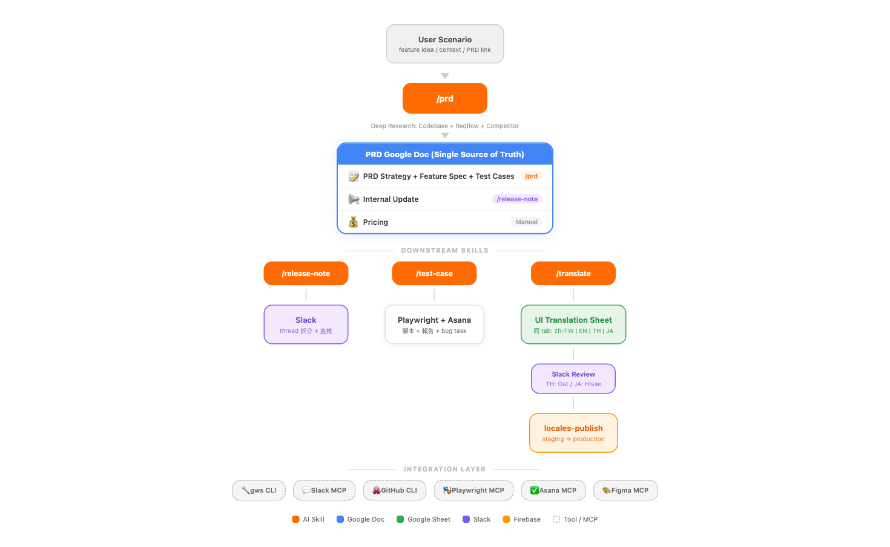

PM Release Accelerator
AI Skills × Google Workspace × Slack
自動化 PM 產品開發文件流程
從 PRD 撰寫到翻譯發布，一條指令完成所有文件
Scroll to Start ↓
自動化 PM 產品開發文件流程
從 PRD 撰寫到翻譯發布，一條指令完成所有文件
每次產品上線前，PM 都要面對這些重複性高、容易出錯的文件工作
散亂的 Google Docs、Slack threads、PDF 需手動整理成結構化 PRD，每次花費 2-4 小時
EN/TH/JA 三語翻譯需手動對照術語表，review request 手動發 Slack 給不同 reviewer
Feature Spec 中的 test cases 散落各處，無法自動產出腳本或追蹤結果
每次從 PRD 手動摘要，重新排版 Internal Update，手動貼 Slack
4 個 Claude Code Skills，加速產品開發文件產出
locales-publish 自動更新 staging & production從 User Scenario 到產品上線，所有產出寫入同一份 PRD Google Doc

背後串接的工具與 MCP Server，讓 Skill 能直接讀寫各種外部系統
五步驟開始使用
git clone https://github.com/Lydia47/pm-release-accelerator.git
cd pm-release-accelerator && cp -r .claude/commands/* ~/.claude/commands/
npm install -g @googleworkspace/cligws auth setup → gws auth login -s drive,sheets,docs
在 Claude Code 輸入 /prd interactive，貼入 user scenario 即可一條龍產出完整 PRD
拿到 PRD Doc ID 後 → /release-note <DOC_ID> → /translate <product> auto
從一句 User Scenario 到完整 PRD + 翻譯，全程 AI 自動完成
“WebWidget lead capture 希望透過 SDK 實現 data gravity 幫助客戶更快收集顧客的 email / phone，預期透過 popup or web chat 對話中填寫 email/phone 就能取得 prize”
replaceAllText 寫回 PRD Doc 的 📢 sectionlocales-publish 發布串接 Scheduled Agents，定期掃 reqflow 主動提議新功能
自動追蹤 feature 上線後的使用數據
Playwright MCP 成熟後，test-case 全自動執行
直接更新 Google Doc 的 rich formatting（不只純文字）